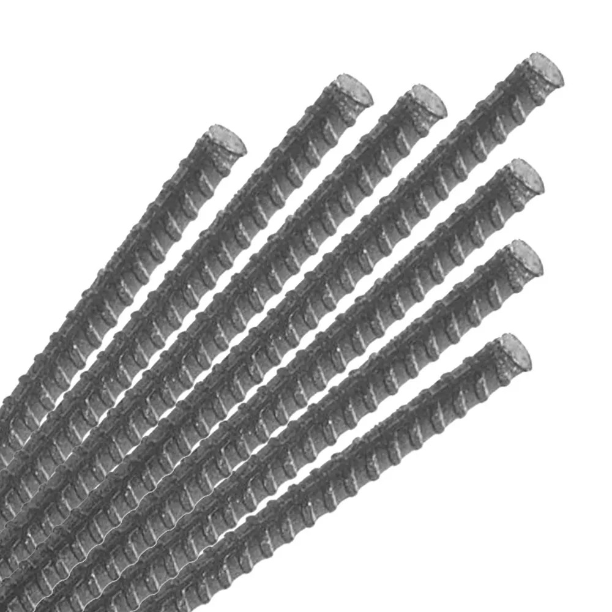

Barras de acero corrugado de 3/8 de pulgada

Barras metálicas con superficie corrugada que favorece su adherencia al concreto. Se emplean en elementos estructurales según el diseño de ingeniería y suelen almacenarse en atados largos sobre soportes o pallets resistentes.